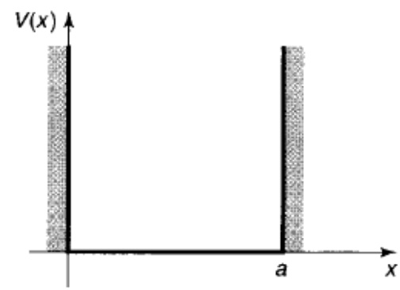

给定特定的势函数\(V(x,t)\)，可以通过Schrödinger方程求解出波函数\(\Psi(x,t)\).
假设：
[设]势函数不依赖时间，即\(V(x,t) = V(x)\).
[设]\(\Psi(x,t) = \psi(x)\phi(t)\)
[注]由于\(\Psi(x,t)\)是归一化的，因此\(\psi(x)\)也是归一化的.
$$\begin{align} \therefore&\frac{\partial \Psi}{\partial t} = \psi\frac{\mathrm{d} \phi}{\mathrm{d} t}\\ &\frac{\partial^2 \Psi}{\partial x^2} = \phi\frac{\mathrm{d}^2 \psi}{\mathrm{d} x^2} \end{align}$$代入含时Schrödinger方程，得：
$$i\hbar\psi\frac{\mathrm{d} \phi}{\mathrm{d} t} = -\frac{\hbar}{2m}\frac{\mathrm{d}^2 \psi}{\mathrm{d} x^2}\phi + V\psi\phi$$两边同时除以\(\psi\phi\)，得：
$$i\hbar\frac{1}{\phi}\frac{\mathrm{d} \phi}{\mathrm{d} t} = -\frac{\hbar}{2m}\frac{1}{\psi}\frac{\mathrm{d}^2\psi}{\mathrm{d} x^2} + V$$此时，方程左边仅为\(t\)的函数，右边仅为\(x\)的函数.
方程成立的唯一条件为左右两边均为同一常数（否则，改变\(x,t\)中任一个，等式都会不成立）.
设此常数为\(E\)，则：
$$i\hbar\frac{1}{\phi}\frac{\mathrm{d} \phi}{\mathrm{d} t} = E$$ $$-\frac{\hbar}{2m}\frac{1}{\psi}\frac{\mathrm{d}^2 \psi}{\mathrm{d} x^2} + V = E$$ 方程\(i\hbar\frac{1}{\phi}\frac{\mathrm{d} \phi}{\mathrm{d} t} = E\)求解此微分方程，得：
将常数\(C\)合并到\(\psi\)中，得：
$$\phi = e^{-iEt/\hbar}$$ 方程\(-\frac{\hbar}{2m}\frac{1}{\psi}\frac{\mathrm{d}^2 \psi}{\mathrm{d} x^2} + V = E\)由于\(V(x)\)未知，此方程无法求解.
记此方程为定态Schrödinger方程.
只有给出特定的势函数\(V(x)\)才能求解定态Schrödinger方程.
概率密度\(|\Psi(x,t)|^2\)与时间无关
$$|\Psi(x,t)|^2 = \Psi\cdot\Psi^* = \psi e^{-iEt/\hbar}\cdot \psi^*e^{iEt/\hbar} = |\psi(x)|^2$$ 补充知识点经典力学中，总能量动能加势能称为Hamiltionian.
$$H(x,p) = \frac{p^2}{2m} + V(x)$$将动量算符\(\hat p = \frac{\hbar}{i}\frac{\partial}{\partial x}\)代入Hamiltonian公式，得：
$$\hat H = -\frac{\hbar^2}{2m}\frac{\partial^2}{\partial x^2} + V(x)$$用于描述量子系统的总能量及其时间变化规律.
Hamiltonian量是否含时，主要看\(V\)是否显含时间，当然有时会有\(m\)随时间变化的情况，无论如何，上式是与时间无关的Hamiltonian量，这是肯定的.
总能量的期望为：
$$\begin{align} \langle H\rangle &= \int_{-\infty}^{+\infty} \psi^* \hat H \psi\mathrm{d}x\\ &= \int_{-\infty}^{+\infty} \psi^* E\psi\mathrm{d}x\\ &= E \end{align}$$ $${\hat H}^2 \psi = \hat H(\hat H\psi) = \hat H(E\psi) = E(\hat H\psi) = E^2\psi$$ $$\langle H^2\rangle =\int_{-\infty}^{+\infty} \psi^* {\hat H}^2\psi\mathrm{d}x = E^2$$ $$\sigma_H = \langle H^2\rangle - \langle H\rangle^2 = 0$$总能量每次测量的结果都是\(E\).
[设]
$$V(x) = \begin{cases} 0,\quad 0\leq x\leq a\\ \infty,\quad others \end{cases}$$
势阱外，\(\psi(x) = 0\)，无法观测到粒子.
势阱外\(V = \infty\)，而定态Schrodinger方程的能量是有限的，因此\(\psi(x)\)只能为0.
势阱内，\(V=0\)，定态Schrödinger方程为：
$$-\frac{\hbar^2}{2m}\frac{\partial^2 \psi}{\partial x^2} = E\psi$$整理得
$$\frac{\partial^2 \psi}{\partial x^2} = -k^2\psi,\quad k=\frac{\sqrt{2mE}}{\hbar}$$该式为经典谐振子的运动方程.
解此二阶线性齐次微分方程得：
$$\psi(x) = A\sin kx + B\cos kx,~A,B\in \mathbb{R}$$ $$\because \psi(0) = \psi(a) = 0$$ $$\psi(0) = A\sin 0 + B\cos 0 = 0$$ $$\therefore B = 0$$ $$\psi(a) = A\sin ka = 0$$为使上式满足，有以下可能：
若\(A = 0\)或\(k = 0\)：
$$\psi(x) \equiv 0$$无意义.
若\(\sin ka = 0\)，即：
$$ka = 0, \pm\pi, \pm2\pi,\cdots$$将负号合并至\(A\)中，于是\(k\)可能的取值为：
$$k_n = \frac{n\pi}{a},~n=1,2,\cdots$$因此\(E\)可能的取值为：
$$E_n = \frac{k_n^2\hbar^2}{2m} = \frac{n^2\pi^2\hbar^2}{2ma^2},\quad n=1,2,\cdots$$这也就是说，一个粒子在一维无限深方势阱中的能量只能取某些特定的值.
每一个能量取值都对应一种本征态.
简单取其正实根：
$$A = \sqrt{\frac{2}{a}}$$故势阱内的解为：
$$\psi_n(x) = \sqrt{\frac{2}{a}}\sin(\frac{n\pi}{a}x)$$\(\psi_1\)具有最低的能量，称为基态.
其他态能量均高于\(\psi_1\)，称为激发态.
\(\psi_n(x)\)相对于势阱中心（\(x = \frac{a}{2}\)）是奇偶交替的：\(\psi_{2n+1}\)是偶函数；\(\psi_{2n}\)是奇函数.
随着能量的增加，态的节点（与x轴交点）数逐渐+1：\(\psi_1\)没有（不计端点）、\(\psi_2\)一个、\(\psi_3\)两个……
性质3\(\psi_n(x)\)间是相互正交的，即：
\(\psi_n(x)\)是完备的，即任一一个函数\(f(x)\)都可以用其线性叠加表示：
$$f(x) = \sum_{n=1}^{\infty}c_n\psi_n(x)$$一维无限深方势阱的定态为：
$$\Psi_n(x,t) = \sqrt{\frac{2}{a}}\sin\left(\frac{n\pi}{a}x\right)e^{-i(n^2\pi^2\hbar/2ma^2)t}$$含时Schrödinger方程的一般解为定态解的线性叠加：
$$\Psi(x,t) = \sum_{n=1}^\infty c_n\sqrt{\frac{2}{a}}\sin\left(\frac{n\pi}{a}x\right)e^{-i(n^2\pi^2\hbar/2ma^2)t}$$ $$c_n = \sqrt{\frac{2}{a}}\int_0^a\sin\left(\frac{n\pi}{a}x\right)\Psi(x,0)\mathrm{d}x$$\(|c_n|^2\)为对能量进行测量时得到结果为\(E_n\)的概率.
$$\sum_{n=1}^\infty|c_n|^2 = 1$$一个质量为\(m\)的物体挂在一个力常数为\(k\)的弹簧上，其运动由胡克定律决定：
$$F = -kx = m\frac{\mathrm{d}^2 x}{\mathrm{d} t^2}$$其解为：
$$x = A\sin(\omega t) + B\cos(\omega t)$$其中：
$$\omega = \sqrt{\frac{k}{m}}$$[设]\(\hat A, \hat B\)为算符.
通常情况下，有：
$$\hat A\hat B\neq \hat B\hat A$$[注]对易子本身也是算符.
若\([\hat A, \hat B] = 0\)，则称\(\hat A\)与\(\hat B\)是对易的，即：
$$\hat A\hat B = \hat B\hat A$$将势函数
$$V(x) = \frac{1}{2}m\omega^2 x^2$$代入Hamiltonian算符，得：
代入定态Schrödinger方程
$$\hat H \psi = E\psi$$得：
$$\frac{1}{2m}[p^2 + (m\omega x)^2]\psi = E\psi$$设：
$$a_\pm = \frac{1}{\sqrt{2\hbar m\omega}}(\mp i\hat p + m\omega \hat x)$$ $$\begin{align} a_-a_+ &= \frac{1}{2\hbar m\omega}(i\hat p + m\omega \hat x)(-i\hat p + m\omega \hat x)\\ &= \frac{1}{2\hbar m\omega}[{\hat p}^2 + im\omega\hat p\hat x - im\omega \hat x\hat p + (m\omega\hat x)^2]\\ &= \frac{1}{2\hbar m\omega}[{\hat p}^2 + (m\omega\hat x)^2 - im\omega(\hat x\hat p - \hat p\hat x)]\\ &= \frac{1}{2\hbar m\omega}[{\hat p}^2 + (m\omega\hat x)^2] - \frac{i}{2\hbar}[\hat x\hat p - \hat p\hat x]\\ \end{align}$$ $$\begin{align} \because &\hat H = \frac{1}{2m}[{\hat p}^2 + (m\omega\hat x)^2] \end{align}$$